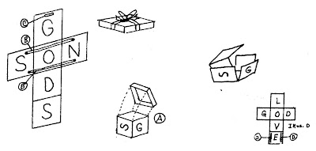
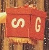

Greatest Gift
4/3/2011
{kind=link}

{kind=link}

Several days ago I posted a photo of myself with yellow bird puppet and a large red gift box I used as a prop. In looking through a copy of Creating Speaksakes (1986), I found that I had published the directions for building this prop. Condensed here, they are:
Six thin plywood* squares are assembled as shown to make a cross. Hinge the squares so they can be folded into a cube. A shallow lid is made to slip over the4 cube. This holds the cube in place and gives the appearance of a gift. A bow on top adds realism.
When the lid is removed, the box will collapse, showing it was empty. But when lifted into view, the six hinged units will form a cross.
*To keep the cross arms extended without aid, I stretched a strong rubber band between two screws (B). The head of the screw was raised slightly above the surface so the rubber band could be hooked over the raised heads of the screws.
The puppet and I discussed the value of precious gifts as we viewed several letters on the sides of the gift box:
S- Silver
G-Gold
D-Diamonds
But these have little true forever value (lid is raised; box collapses). There is only one true forever gift with priceless value (Lift cross by grasping square with letter "G". I cut a finger slot on the upper edge of this panel to get an easy grip with one hand.)
* * * * * *
For a simple object lesson you can easily make this same effect from a folded piece of heavy paper. Enjoy.